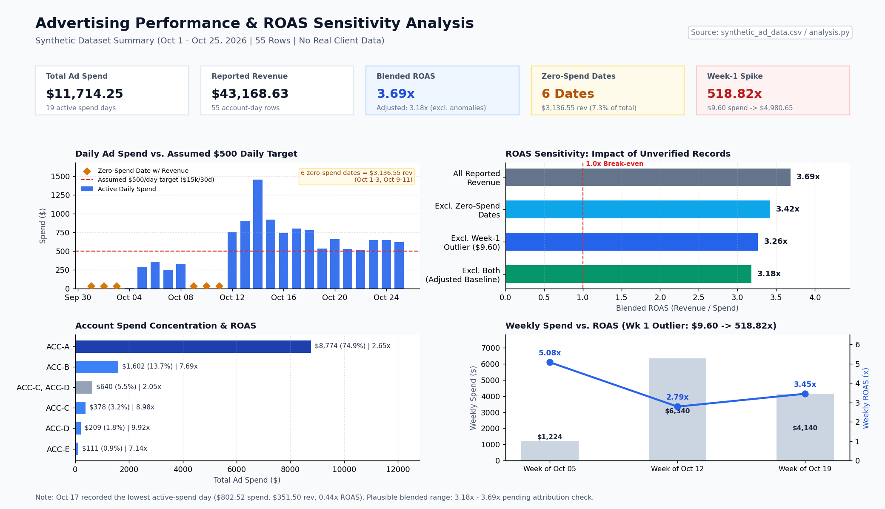
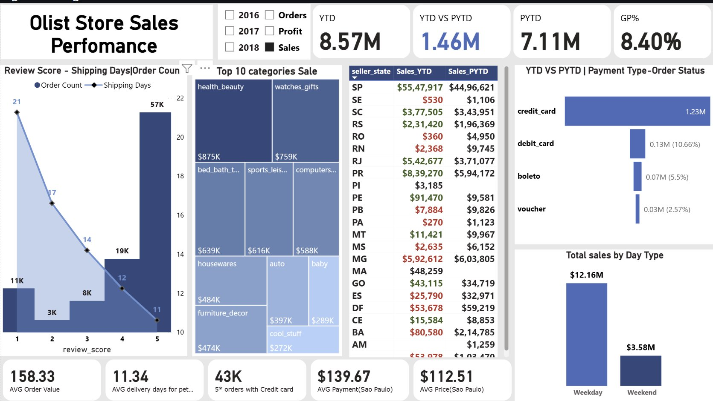
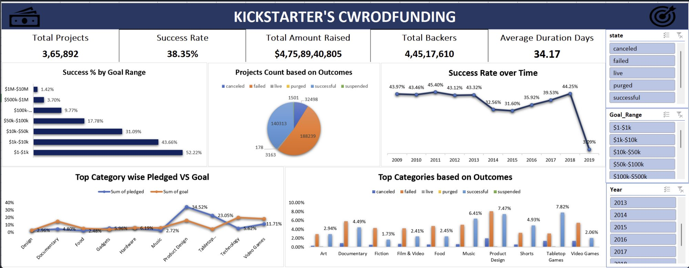
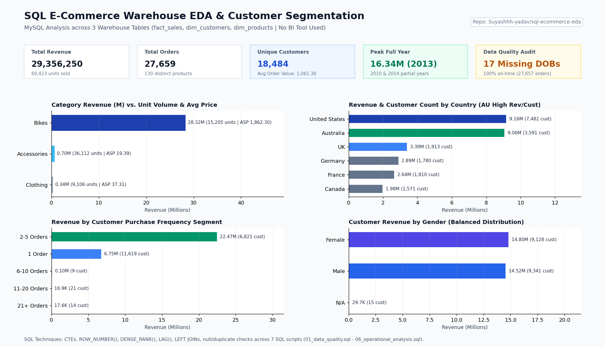
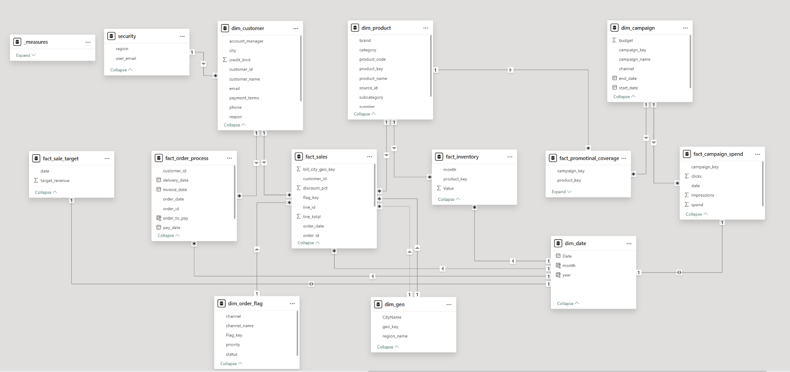

Data Analyst
|
BI & Analytics
I turn raw, multi-table datasets into clear Power BI dashboards, automated Python/SQL reporting pipelines, and rule-based scoring tools. Focused on data quality checks, star-schema modeling, and practical business reporting.
Clean data and clear definitions come before any chart.
I am a Data Analyst with a B.Tech in Artificial Intelligence & Data Science (8.08 CGPA) and 1.2 years of hands-on experience across agritech, education services, and e-commerce analytics.
My work focuses on turning messy multi-table exports into reliable reporting models—whether restructuring e-commerce tables into a Star Schema with dynamic Row-Level Security in Power BI, running ROAS sensitivity checks on zero-spend days, or writing Python scripts that cut manual profile formatting from 22 minutes to ~30 seconds (estimated across 25–30 test resumes).
Good BI goes beyond layout: it surfaces missing spend records, states assumptions and metric limitations upfront, and gives stakeholders numbers they can question and trust.
Data Quality & Anomaly Audits
Flagging zero-spend revenue dates, small-denominator ratio spikes, and duplicate keys before metrics reach stakeholders.
Star Schema & RLS Modeling
Organizing flat tables into fact/dimension schemas in Power Query with user-email Row-Level Security.
Python & SQL Reporting Automation
Replacing repetitive spreadsheet prep with Python data pipelines, document parsers, and structured SQL checks.
Professional Experience & Education
Data Analyst
Aug 2026 – Oct 2026- Built a deterministic Python weighted scoring rubric across 6 field variables (crop type, soil, water source, fertilizer practice, farm revenue, automation level) to compute each farmer's 0–100 readiness index and gap breakdown for Sales & Marketing outreach.
- Scored 400 farmers from an initial batch of a 1,000-farmer rollout, segmenting the cohort into 50% high-readiness, 30% undecided, and 20% resistant (NOT MEASURED on downstream conversion; exact counts vs. rounded split pending confirmation).
- Compared farmer water and fertilizer needs against actual usage, finding 30% relied on dealer/fertilizer-company advice rather than soil- and crop-based recommendations, and proposed targeted advisory outreach (NOT MEASURED).
AI Generalist
Jan 2026 – Jun 2026- Built a lead-generation workflow with OpenClaw, Claude API, and TypeScript writing to Google Sheets, delivering 5,000 company and decision-maker leads for Sales & Marketing (~2,500 automated, ~2,500 sourced manually; reply/conversion NOT MEASURED).
- Built a Python resume formatter (Gemini API, pandas, openpyxl, python-docx, pdfplumber) converting PDF, Word, Excel, and image resumes into Technoedge's trainer-profile template; tested on 25–30 resumes, cutting prep from ~22 min to ~30 sec (~97% ESTIMATED — timing log unverified).
- Consolidated separate project-tracking datasets from 3 teams (instructional design, content writing, video editing) into one Excel dashboard for manager review (impact NOT MEASURED).
Data Analyst Intern
May 2025 – Nov 2025- Built a Python pipeline consolidating separate Sales and Marketing datasets into one source, replacing parallel team reports and cutting report-compilation time by 25% (ESTIMATED — before/after hours not logged).
- Built and maintained 4–5 Power BI dashboards (DAX) refreshed daily to track sales, profit, customer retention rate, delivery time, and product/region performance for a 5–6 member Sales & Marketing group (impact NOT MEASURED).
- Analyzed retention and conversion drivers (time to second order, basket diversity, funnel drop-off across landing page, cart, and checkout) to flag underperforming products and regions for weekly follow-up (NOT MEASURED).
B.Tech in Artificial Intelligence & Data Science
Fabtech Technical Campus · Sangola, Maharashtra
Data Analytics Certificate — ExcelR
Coursework in SQL, Advanced Excel, Power BI, Tableau & Python.
Deloitte Australia Job Simulation (Forage)
Tableau factory downtime dashboard & Excel equality classification.
HackerRank SQL 5-Star Practice Badge
Profile practice badge; 29 documented solutions in GitHub repo.
Featured Interactive Dashboards
Real-world analytical systems built to solve operational, marketing, and marketplace challenges. Click any dashboard to inspect high-resolution visuals.
Advertising Performance & ROAS Sensitivity Analysis
Business Question: How is ad spend concentrated across accounts, and can headline ROAS (3.69x) be trusted before reallocating budget?
ACC-A took 74.9% of spend ($8,773.71) at 2.65x ROAS, while Oct 17 dropped to 0.44x.
ACC-C, ACC-D), and reviewing ACC-A before scaling spend.

Olist E-Commerce Marketplace Sales & Operations
Business Question: Which shipping bottlenecks, product categories, and payment patterns drive Olist's 99,441-order marketplace performance and customer review scores?
pet_shop averaged 11.34 days); delivery delays strongly coincide with poor ratings. health_beauty (R$875K) and watches_gifts (R$759K) led YTD sales, and credit cards drove +R$1.23M of the +R$1.46M YoY growth (~75K credit card orders across the dataset).
R$, labeled $ on legacy visuals); 2018 YTD is a partial year; correlation does not prove causation; exact credit-card % of total revenue awaits raw CSV recomputation.

Kickstarter Crowdfunding Analysis: 10-Year Excel & 2018 Tableau
Business Question: Across 2009–2019 (and the 2018 vs. 2017 slice), how do goal sizing, campaign duration, and category concentration relate to crowdfunding success?
state filter includes Null/live/purged/suspended; 2019 (3.09%) is partial; legacy screenshots have header typos (CWRODFUNDING / PERFORMNACE) and Indian commas on Excel.

SQL E-Commerce Warehouse EDA & Customer Segmentation
Business Question: Which product categories, repeat-purchase cohorts, and country markets drive warehouse revenue, and what data-quality caveats exist before reporting?
Bikes generated 28.32M of 29.36M revenue while Accessories led unit volume (36,112 units at 19.39 ASP). Customers with 2–5 orders (6,821 buyers) drove 22.47M vs. 6.75M from 11,619 one-time buyers; Australia (9.06M from 3,591 customers) nearly matched US revenue (9.16M from 7,482).

Data Modeling, RLS & Pipelines
A performant BI dashboard is only as strong as the underlying data architecture. Here is how I structure clean schemas, dynamic security, and automated pipelines.
Multi-Fact Star Schema with Dynamic RLS
Restructured 23 fragmented raw tables (22 Power Query source tables with appended 2025–2026 orders) into a Star Schema with 6 Fact tables (fact_sales, fact_order_process, fact_inventory, fact_campaign_spend, fact_promotinal_coverage, fact_sale_target) and 6 Dimension tables (dim_customer, dim_product, dim_date, dim_geo, dim_order_flag, dim_campaign), plus a security mapping table and _measures. Uses 1-to-many single-direction relationships on core paths and 2 deliberate bidirectional date relationships (fact_campaign_spend & fact_sale_target ↔ dim_date) on a practice/synthetic dataset.

Automated Resume Parser & Formatter
At Technoedge, built a Gemini API + Python pipeline (pandas, openpyxl, python-docx, pdfplumber) to convert PDF, Word, Excel, and image resumes into a standard profile template. Also prepared a sanitized deterministic regex demo (PDF, DOCX, TXT; 14/14 unit tests passing).
Farmer AI-Adoption Readiness Scoring
Built a rule-based Python weighted rubric across 6 variables (crop type, soil condition, water source, fertilizer practice, annual revenue band, automation level) scoring 400 farmers into 3 outreach segments (NOT MEASURED). Sanitized synthetic demo (14/14 unit tests passing) prepared locally.
SQL Analytics & E-Commerce EDA
CTEs, window functions (ROW_NUMBER, DENSE_RANK, LAG), multi-table joins, data quality checks, and operational/cohort EDA across 29 documented SQL solutions and a 3-table e-commerce warehouse (27,659 orders).
Technical Skills Matrix
SQL & Databases
BI & Data Modeling
Python & Pipelines
AI APIs & Automation
Let's build clear, reliable analytics together.
I am actively seeking entry-level opportunities in Data Analytics and Business Intelligence. Feel free to send a message or copy my email directly.
Send a Direct Message
Drop a note regarding a job opportunity, project inquiry, or technical collaboration.
© 2026 Suyash Yadav. Designed with Swiss minimalism & built for performance.
Hosted on GitHub Pages · Back to top ↑